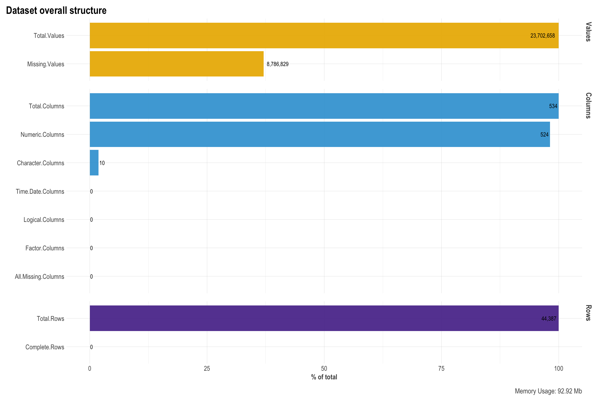

This webpage is a companion piece to the paper entitled: Predictors of Climate Change Policy Support: A Machine Learning Approach. A pre-print of the manuscript can be found online.
In the manuscript, we use machine learning techniques on a set of nationally representative surveys of 22 European countries and Israel, to determine the relative influence of a large number (151 predictors) of individual-level attitudes, beliefs, perceptions, and behaviors from six groups:
[1] media and social trust,
[2] politics,
[3] subjective well-being, social exclusion, religion, national and ethnic identity,
[4] attitudes towards climate change,
[5] energy security and energy preferences,
[6] welfare attitudes,
[7] human values and
socio-demographic factors, as well as national-level indices of social, economic, ecological, and environmental development on climate change policy preferences.
Here, I present more fine-grained descriptive statistics, visualizing the relationship between various individual- and macro-level variables and the main variable of interest: Fossil fuel taxation support in more detail compared to the presentation in the manuscript.
Following this Overview section, I will provide some contextual information on the data and main question of this research questions of the manuscript in the Introduction section.
The following Data Download & Preparation section describes how to download and prepare the data-sets. The data set containing over 500 columns most of which are irrelevant for this project. In this section I therefore also clean the data by removing many of the unnecessary columns such as ‘administrative’ columns from the data-set and describe how I arrived at the final, cleaned data set.
The last section Exploratory Data Analysis (EDA) presents the fine-grained descriptive statistics which I created to augment the results presented in the manuscript. They provide a more in-depth dive into the various datasets utilized in the manuscript.
Pleas note that some of the following information is part of an academic manuscript which is currently in peer-review process.
Fossil-fueled climate change poses a significant threat to planetary and civilizational health (IPCC 2022; Kemp et al., 2022). Mitigating climate change requires enacting far-reaching climate policies such as restrictive supply-side policies (e.g., fossil-fuel non-proliferation treaty, limitations, moratoria, and bans; Newell & Simms, 2019) as well as regulatory demand-side policies (e.g., fossil-fuel taxation, incentivizing energy efficiency) that facilitate behavior changes towards low-carbon-intensive lifestyles. Demand-side policies that tax polluting sources of energy, such as fossil fuels, are among the most effective ways to curb emissions that harm the planet and human health (Carl & Fedor, 2016; Stoddard et al. 2021). Moreover, the income generated by fossil fuel taxation can be used to accelerate the low-carbon transition. However, 70% of energy-related CO2 emissions from advanced and emerging economies are entirely untaxed, offering little incentive to move to cleaner energy (OECD, 2019). Though the immense potential of fossil fuel taxation policies is undeniable, public opinion research also indicates that support for them varies greatly across Europe (e.g., Dechezleprêtre et al., 2022; Fairbrother, Sevä, & Kulin, 2019; Harring, Sverker, & Matti, 2019).
Prior research has significantly enriched our comprehension of the intricacy inherent in support for climate change policies. However, the available research has yet to identify the most important and robust factors associated with this support (or lack thereof) amongst the plethora of factors that have been investigated so far (but see Lee et al., 2015 for climate change risk perceptions). For example, analysis techniques (e.g., linear regression, latent class analysis, multi-level regression) typically used in previous research are suboptimal for comparing the predictive importance of a larger number of constructs simultaneously (Lee et al., 2015; Yarkoni & Westfal, 2017). These methods also readily permit the erroneous overfitting of statistical models to specific datasets. The consequence of these practical research constraints is that previous research has not been able to meaningfully compare the relative importance of the growing list of constructs associated with climate change mitigation policy preferences (e.g., Fairbrother, Sevä, & Kulin, 2019; Goldberg et al., 2021; Kàcha et al., 2022; Dechezleprêtre et al., 2022; Poortinga et al., 2019). Thus, at present, one of the key challenges to understanding the factors associated with climate change policy preferences is to make the existing knowledge cumulative by identifying the strongest and most robust predictors among the many. At the same time, relatively little research has explored cross-national differences in climate change mitigation policy support (but see, Dechezleprêtre et al., 2022; Fairbrother, Sevä, & Kulin, 2019; Uenal et al., 2020), which is important because the influence of factors may differ between countries.
Using a machine learning approach (i.e., random forest) on data from nationally representative samples from 22 European countries and Israel, in the manuscript, we provide the first large-scale assessment of the highest number of factors (151 predictors) underlying climate change mitigation policy preferences to date. The data come from the European Social Survey 8 (2016). The ESS8 contains a measure of climate change mitigation policy preferences by asking ‘To what extent are you in favor or against the following policies in [country] to reduce climate change: increasing fossil-fuel taxation?’. We group responses to this policy item into three categories: ‘Opposed’, ‘Undecided’, and ‘Support’. Therefore, this analysis identifies the best predictors of climate change mitigation policy support across the entire spectrum of preferences, including the ‘undecided’ category that represents a relatively large share of respondents ranging from 16.75% in Ireland to 33.70% in the Russian Federation.
In the manuscript, using a machine learning approach (i.e., random forest) on data from nationally representative samples from 22 European countries and Israel, we provide the first large-scale assessment of the highest number of factors (151 predictors) underlying climate change mitigation policy preferences to date. The data come from the European Social Survey Round 8 (ESS 8, European Social Survey, 2016). The ESS8 contains a measure of climate change mitigation policy preferences by asking ‘To what extent are you in favor or against the following policies in [country] to reduce climate change: increasing fossil-fuel taxation?’. We group responses to this policy item into three categories: ‘Opposed’, ‘Undecided’, and ‘Support’. Therefore, this analysis identifies the best predictors of climate change mitigation policy support across the entire spectrum of preferences, including the ‘undecided’ category that represents a relatively large share of respondents ranging from 16.75% in Ireland to 33.70% in the Russian Federation.
The data set is publicly available following the below link:
Alternatively to downloading from the above the link, one can also use the ‘essurvey’ package. A description on this package and its’ usage is available in the below link:
For this project, I used the second method, and downloaded the data using the ‘essurvey’. Please note that you will need to first set an account with ESS and than use your email address to be able to download the data if you choose to use the ‘essurvey’. The code to download the data via the ‘essurvey’ package is in the accompanying R script. However, due to privacy concerns, I am not using this method in this project. Instead, the data is available in my github repository. Executing the current file should automatically download the data from my github. If that does not work, please download the data from github directly and load it locally (code provided in R script and rmd file but commented #).
PLEASE NOTE: The code is included in the RMD file but explicitly tuned off (echo=FALSE).
As mentioned in the Overview section, the raw data set contains many variables which are irrelevant to this project. As visible below, the raw data set contains 534 columns each representing one variable corresponding to a question asked in the survey or an administrative question and 44387 rows, each corresponding to one surveyed person.

It is also visible that the raw data set contains many missing values as well as different types of variable (e.g., integer, character, etc.). It is clear at this point that data selection and cleaning will require studying the survey documentation prior to anything else. The Survey documentation is very detailed and thorough and can be accessed following this link:
Having studied the data documentation, I decided to remove many columns from the data-set. I explain my choices below:
Since I am interested in analyzing “climate change policy preferecens (fossil fuel taxation)” across countries and not for each country individually, the country specific variables are of no relevance for my goal. So I am going to remove the country specific variables all together.
For similar reasons as above, I also don’t need the sampling stratification weights and population weights and will remove those from the data set as well.
The data set also contains a number of so-called ‘administrative variables’ such as interview time and date etc. which are not relevant for my goals and will thus be removed.
The survey documentation also list several binary type variables which indicate no relevance to this projects main objective and I will thus remove those as well.
Lastly, the survey contains many missing values which are coded in many different ways. For example, missing values refer to invalid answers (e.g. refusal, don’t know, missing) which are encoded with numbers 66, 77, 99 for some features, and with 6, 7, 8, 9 for the other features. Generally, there are a lot of different ways of how the question encoding was designed. This may be the result of many different groups of people working on this survey. I will make use of the ‘esssurvey’ function to automatically label all invalid answers into NaN values. See documentation of this package in the link provided above.
Given the large amount of specific cleaning tasks, I manually went through the documentation, retrieved all the information needed for the cleaning and removed all irrelevant variables.
As visible below, the cleaned data set now contain fewer missing values but still a high number of columns (151).
Now, we’ll first tale look at the averaged weighted percentage of climate change policy support and other variables present in the dataset by mapping them. How are European countries differing in terms of their climate change awareness, concern? What percentage of each countries population sees themselves as responsible for climate change? How high is the support for Climate Change Mitigation policies? And finally, what are the causal attributions of European Citizens in terms of identifying the cause of climate change (man-made vs. natural vs. denial)
As we have seen in the previous visualizations, European citizens show differences in their level of support for climate change mitigation policies. Next, we’ll start gaining some more in-depth insights by visualizing the relationship between our variable of main interest “climate change policy preferences (fossil fuel taxation)” and the available features from other datasets. Previous research has identified dozens of factors which are involved in shaping whether people support climate change policies or not. These feature can be divided into National-level factors such as economic, political and environmental factors and Individual level factors such as beliefs, values, ideologies etc. The data set contains many such variables, and I am presenting only a subset of these below.
We’ll start by analyzing some National-level factors.
Next, we’ll visualize the relationship between individual level factors such as values, beliefs, and ideology and our outcome variable, climate change policy preferences
IPCC. (2022). Sixth Assessment Report: Working Group III: Climate Change 2022: Mitigation of Climate Change. Consulté à l’adresse
https://www.ipcc.ch/report/ar6/wg3/
Kemp, L., Xu, C., Depledge, J., Ebi, K. L., Gibbins, G., Kohler, T. A., … & Lenton, T. M. (2022). Climate Endgame: Exploring catastrophic climate change scenarios.
Proceedings of the National Academy of Sciences, 119(34), e2108146119. https://doi.org/10.1073/pnas.2108146119
Newell, P., & Simms, A. (2020). Towards a fossil fuel non-proliferation treaty. Climate Policy, 20(8), 1043-1054. https://doi.org/10.1080/14693062.2019.1636759
Carl, J., & Fedor, D. (2016). Tracking global carbon revenues: a survey of carbon taxes versus cap-and-trade in the real world. Energy Policy 96, 50–77.
Stoddard, I., Anderson, K., Capstick, S., Carton, W., Depledge, J., Facer, K., … Hultman, M. (2021). Three decades of climate mitigation: why haven’t we bent the global emissions curve? Annual Review of Environment and Resources, 46, 653‐689.
OECD (2019), Taxing Energy Use 2019: Using Taxes for Climate Action, OECD Publishing, Paris, https://doi.org/10.1787/058ca239-en.
Dechezleprêtre, A., Fabre, A., Kruse, T., Planterose, B., Chico, A. S., & Stantcheva, S. (2022). Fighting climate change: International attitudes toward climate policies (No. w30265). National Bureau of Economic Research. http://www.nber.org/papers/w30265
Fairbrother, M., Sevä, I. J., & Kulin, J. (2019). Political trust and the relationship between climate change beliefs and support for fossil fuel taxes: Evidence from a survey of 23 European countries. Global Environmental Change, 59, 102003. https://doi.org/10.1016/j.gloenvcha.2019.102003
Harring, N., Jagers, S. C., & Matti, S. (2019). The significance of political culture, economic context and instrument type for climate policy support: a cross-national study. Climate Policy, 19(5), 636-650. https://doi.org/10.1080/14693062.2018.1547181
Bumann, S. (2021). What are the Determinants of Public Support for Climate Policies? A Review of the Empirical Literature. Review of Economics, 72(3), 213-228. https://doi.org/10.1515/roe-2021-0046
Drews, S., van den Bergh, J.C.J.M., 2016. What explains public support for climate po- licies? A review of empirical and experimental studies. Clim. Policy 16, 855–876.
Leiserowitz, A., (2006). Climate change risk perception and policy preferences: the role of affect, imagery, and values. Clim. Change 77, 45–72.
https://doi.org/10.1007/s10584-006-9059-9
Goldberg, M. H., Gustafson, A., Ballew, M. T., Rosenthal, S. A., & Leiserowitz, A. (2021). Identifying the most important predictors of support for climate policy in the United States. Behavioural Public Policy, 5(4), 480-502. https://doi.org/10.1017/bpp.2020.39
Poortinga, W., Whitmarsh, L., Steg, L., Böhm, G., & Fisher, S. (2019). Climate change perceptions and their individual-level determinants: A cross-European analysis.
Global environmental change, 55, 25-35. https://doi.org/10.1016/j.gloenvcha.2019.01.007
Kácha, O., Vintr, J., & Brick, C. (2022). Four Europes: Climate change beliefs and attitudes predict behavior and policy preferences using a latent class analysis on 23 countries. Journal of Environmental Psychology, 81, 101815. https://doi.org/10.1016/j.jenvp.2022.101815
Uenal, F., Sidanius, J., & van der Linden, S. (2022). Social and ecological dominance orientations: Two sides of the same coin? Social and ecological dominance
orientations predict decreased support for climate change mitigation policies. Group Processes & Intergroup Relations, 25(6), 1555-1576.
https://doi.org/10.1177/13684302211010923
Lee, T. M., Markowitz, E. M., Howe, P. D., Ko, C. Y., & Leiserowitz, A. A. (2015). Predictors of public climate change awareness and risk perception around the world. Nature climate change, 5(11), 1014-1020. https://doi.org/10.1038/nclimate2728
Yarkoni, T., & Westfall, J. (2017). Choosing prediction over explanation in psychology: Lessons from machine learning. Perspectives on Psychological Science, 12(6), 1100-1122. https://doi.org/10.1177/1745691617693393
Breiman, L. (2001). Random forests. Machine Learning, 45(1), 5–32. DOI
Gelfand, M. J., Raver, J. L., Nishii, L., Leslie, L. M., Lun, J., Lim, B. C., … Yamaguchi, S. (2011). Differences between tight and loose cultures: A 33-nation study. Science, 332(6033), 1100–1104. DOI
Kunst, J. R., Fischer, R., Sidanius, J., & Thomsen, L. (2017). Preferences for group dominance track and mediate the effects of macro-level social inequality and violence across societies. PNAS, 114(21), 5407–5412. DOI
Sheehy-Skeffington, J., & Thomsen, L. (2020, April 1). Egalitarianism: psychological and socio-ecological foundations. Current Opinion in Psychology. Elsevier B.V. DOI
Sidanius, J., & Pratto, F. (1999). Social Dominance. Social Dominance. Cambridge University Press.
DOI
## R version 4.0.2 (2020-06-22)
## Platform: x86_64-apple-darwin17.0 (64-bit)
## Running under: macOS 10.16
##
## Matrix products: default
## BLAS: /Library/Frameworks/R.framework/Versions/4.0/Resources/lib/libRblas.dylib
## LAPACK: /Library/Frameworks/R.framework/Versions/4.0/Resources/lib/libRlapack.dylib
##
## Random number generation:
## RNG: Mersenne-Twister
## Normal: Inversion
## Sample: Rounding
##
## locale:
## [1] en_US.UTF-8/en_US.UTF-8/en_US.UTF-8/C/en_US.UTF-8/en_US.UTF-8
##
## attached base packages:
## [1] grid stats graphics grDevices utils datasets methods
## [8] base
##
## other attached packages:
## [1] ryouready_0.4 data.table_1.14.6
## [3] car_3.0-10 carData_3.0-4
## [5] sjmisc_2.8.7 questionr_0.7.4
## [7] srvyr_1.0.1 survey_4.0
## [9] survival_3.2-11 Matrix_1.3-3
## [11] countrycode_1.4.0 ggimage_0.2.8
## [13] highcharter_0.8.2 RANN_2.6.1
## [15] mlbench_2.1-3 ipred_0.9-11
## [17] Metrics_0.1.4 fastmatch_1.1-0
## [19] PerformanceAnalytics_2.0.4 xts_0.12.1
## [21] zoo_1.8-9 GGally_2.1.1
## [23] lares_4.9.13 skimr_2.1.3
## [25] labelled_2.8.0 foreign_0.8-81
## [27] haven_2.5.1 broom_1.0.3
## [29] forcats_0.5.2 stringr_1.5.0
## [31] dplyr_1.0.10 purrr_1.0.1
## [33] tidyr_1.3.0 tibble_3.1.8
## [35] ggplot2_3.4.0 tidyverse_1.3.2
## [37] curl_5.0.0 readr_2.1.3
## [39] essurvey_1.0.7 pacman_0.5.1
## [41] readxl_1.4.1
##
## loaded via a namespace (and not attached):
## [1] backports_1.4.1 plyr_1.8.6 igraph_1.2.6
## [4] repr_1.1.3 splines_4.0.2 TH.data_1.0-10
## [7] digest_0.6.31 foreach_1.5.1 h2o_3.32.1.3
## [10] htmltools_0.5.4 magick_2.7.2 fansi_1.0.4
## [13] magrittr_2.0.3 googlesheets4_1.0.1 tzdb_0.3.0
## [16] openxlsx_4.2.3 recipes_0.1.16 modelr_0.1.10
## [19] gower_0.2.2 matrixStats_0.58.0 sandwich_3.0-1
## [22] timechange_0.2.0 strucchange_1.5-2 colorspace_2.1-0
## [25] rvest_1.0.3 mitools_2.4 xfun_0.36
## [28] crayon_1.5.2 RCurl_1.98-1.3 jsonlite_1.8.4
## [31] libcoin_1.0-8 iterators_1.0.13 glue_1.6.2
## [34] gtable_0.3.1 gargle_1.2.1 quantmod_0.4.18
## [37] abind_1.4-5 scales_1.2.1 mvtnorm_1.1-1
## [40] DBI_1.1.3 miniUI_0.1.1.1 Rcpp_1.0.6
## [43] xtable_1.8-4 gridGraphics_0.5-1 stats4_4.0.2
## [46] lava_1.6.9 prodlim_2019.11.13 htmlwidgets_1.5.3
## [49] httr_1.4.4 RColorBrewer_1.1-3 modeltools_0.2-23
## [52] ellipsis_0.3.2 farver_2.1.1 pkgconfig_2.0.3
## [55] reshape_0.8.8 nnet_7.3-16 sass_0.4.5
## [58] dbplyr_2.3.0 utf8_1.2.2 caret_6.0-88
## [61] labeling_0.4.2 later_1.2.0 ggplotify_0.0.7
## [64] tidyselect_1.2.0 rlang_1.0.6 reshape2_1.4.4
## [67] munsell_0.5.0 cellranger_1.1.0 tools_4.0.2
## [70] cachem_1.0.6 cli_3.6.0 party_1.3-7
## [73] generics_0.1.3 sjlabelled_1.1.8 evaluate_0.20
## [76] fastmap_1.1.0 yaml_2.3.7 ModelMetrics_1.2.2.2
## [79] knitr_1.42 fs_1.6.0 zip_2.1.1
## [82] coin_1.4-1 nlme_3.1-152 mime_0.12
## [85] xml2_1.3.3 compiler_4.0.2 rstudioapi_0.14
## [88] reprex_2.0.2 bslib_0.4.2 stringi_1.7.12
## [91] highr_0.10 lattice_0.20-44 vctrs_0.5.2
## [94] pillar_1.8.1 lifecycle_1.0.3 BiocManager_1.30.15
## [97] jquerylib_0.1.4 insight_0.14.1 bitops_1.0-7
## [100] httpuv_1.6.1 patchwork_1.1.1 R6_2.5.1
## [103] promises_1.2.0.1 rio_0.5.26 fastAdaboost_1.0.0
## [106] codetools_0.2-18 MASS_7.3-54 assertthat_0.2.1
## [109] withr_2.5.0 multcomp_1.4-17 rlist_0.4.6.1
## [112] parallel_4.0.2 hms_1.1.2 quadprog_1.5-8
## [115] rpart_4.1-15 timeDate_3043.102 class_7.3-19
## [118] rmarkdown_2.20 rvcheck_0.1.8 googledrive_2.0.0
## [121] TTR_0.24.2 pROC_1.17.0.1 shiny_1.7.0
## [124] lubridate_1.9.1 base64enc_0.1-3| Machine | Time |
|---|---|
| MacBook Pro 8GB | 25’41 |
Social and Demographic Factors
Education
Income
Gender